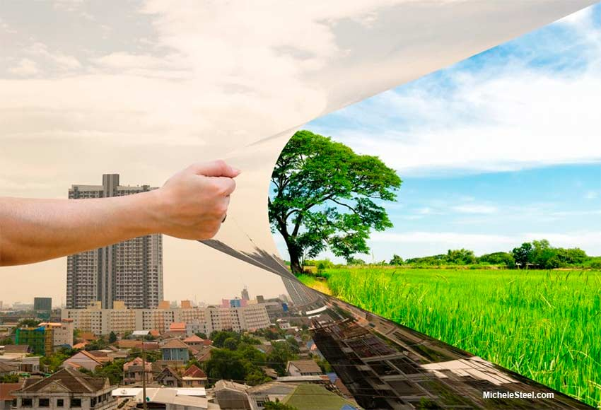
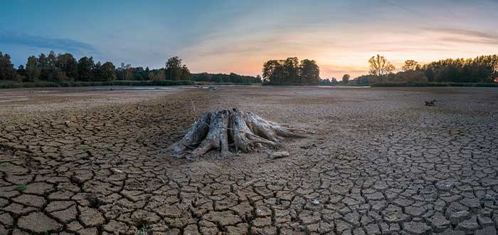

¿Qué es el deterioro ambiental?
El deterioro ambiental se refiere al desgaste del planeta tierra por la contaminación y la destrucción de los ecosistemas, de modo que ya no pueda regenerar sus recursos y satisfacer las necesidades de la flora y la fauna. Este problema es uno de los más grandes de la sociedad actual, debido a que la salud y la integridad de los seres vivos se encuentran en peligro.A continuación, te explicaremos las causas y consecuencias del deterioro ambiental:

Causas:
-El desarrollo industrial y sus actividades contaminan el aire, el suelo y el agua debido a sus desechos contaminantes.
-El uso excesivo de vehículos de que utilizan combustibles fósiles.
-La producción y el uso indiscriminado del plástico.
-La deforestación o tala de árboles es una de las principales.
-La explotación de los recursos naturales.
-La urbanización.
-La acumulacion de aguas residuales.
-Los insecticidas y químicos que se usan para los cultivos.

Consecuencias:
-Enfermedades respiratorias por la contaminación del aire.
-Diversos tipos de cáncer.
-Falta de acceso a agua potable.
-Pérdida de ecosistemas.
-Pérdida de diversidad en las especies.
-Calentamiento global.
-La lluvia ácida.
-Derretimiento de los casquetes polares por el aumento de las temperaturas.
-Peligro de extinción de la flora y fauna.
-Una peor calidad de vida, debido a las enfermedades, las temperaturas, contaminación, etc.
